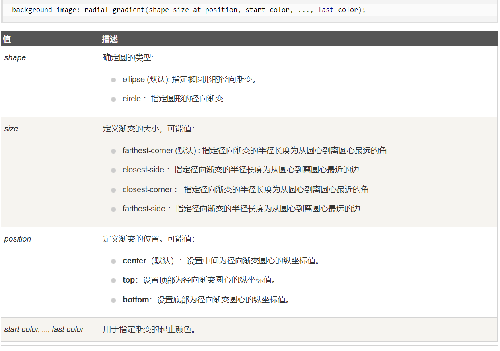

<!DOCTYPE html>
<html>
	<head>
		<meta charset="utf-8">
		<title></title>
		<style>
		.box{
			width: 300px;
			height:300px ;
			/* 
			radial-gradient()径向渐变（放射性的效果）
			默认情况下径向渐变的形状根据元素的形状来计算的
			正方形->圆形
			长方形->椭圆形
			-我们也可以手动指定径向渐变的大小
			circle
			ellipse
			也可以指定渐变的位置
			语法：
			radial-gradient(大小 at 位置，颜色 位置，颜色 位置，颜色 位置)
			大小：
			circle圆形
			e11ipse椭圆
			closest-side近边
			closest-corner近角
			farthest-side远边
			farthest-corner远角		
			位置：
			top right left center bottom 
			 */
			
			background-image:  radial-gradient(100px 100px  ,red,yellow);
			/* background-image:  radial-gradient(100px 100px at center center ,red,yellow); */
			/* background-image:  radial-gradient(100px 100px at 0 0  ,red,yellow); */
			
		}
		</style>
	</head>
	<body>
		<div class="box"></div>
		<!--  -->
	</body>
</html>
